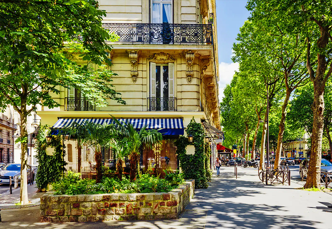
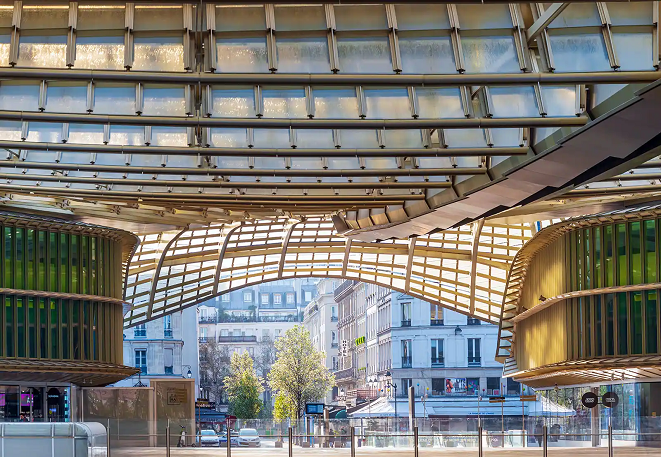
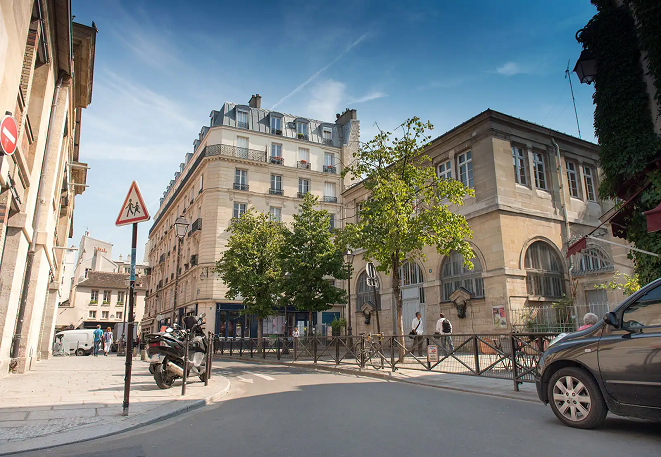
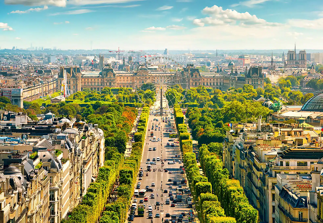

SAINT-GERMAIN STREET
생제르망 거리에는 에펠탑, 마르스 광장, 오르세 미술관 등 파리 7구의 랜드마크가 있다. 이 랜드마크들을 중심으로 루이비통, 휴고보스, 카를 라거펠트 등의 컬렉션으로 파리 생제르망 거리에는 훌륭한 매장들이 많다. 쉴리 다리부터 콜코르드 다리까지 서점을 비롯한 패션 아울렛과 매력적인 시장이 있다.
WESTFIELD FORUM DES HALLES
웨스트필드 포럼 데 알은 1917년에 철거된 역사적인 레알 마켓 플레이스 부지에 세워진 새로운 쇼핑센터이다. 거대한 캐노피가 일 년 내내 쇼핑센터 전체에 자연광을 선사하는 멋진 현대적인 건물이다. 플래그십 패션 매장부터 독립 디자이너 브랜드까지 다양하게 쇼핑할 수 있는 쇼핑센터이다.


LE MARAIS
파리에서 가장 유명한 쇼핑지구이며 다양한 아트 갤러리, 패션 매장 등으로 유명하다. 특히 파티 장소로 유명해 이른 아침까지 계속되는 유흥을 즐기는 데에도 문제가 없는 곳이다. 최신 식의 쇼핑센터 뿐 아니라 노트르담 성당 맞은 편에 있는 백화점에서 스트릿 패션 등 900개가 넘은 브랜드가 입점해 있다.
TRIANGLE D'O
골든 트라이앵글이라고도 알려진 이곳은 뤼 프랑수아 프리미에, 애비뉴 몽타뉴 애비뉴 조지 V를 경계로 하이엔드 쇼핑 부티크가 줄지어 서 있다. 유명한 거리에서 세계적인 패션 브랜드 루비비통, 디올, 샤넬을 비롯한 명품 브랜드의 매장과 H&M, 자라와 같은 브랜드의 매장도 쉽게 찾을 수 있다.
